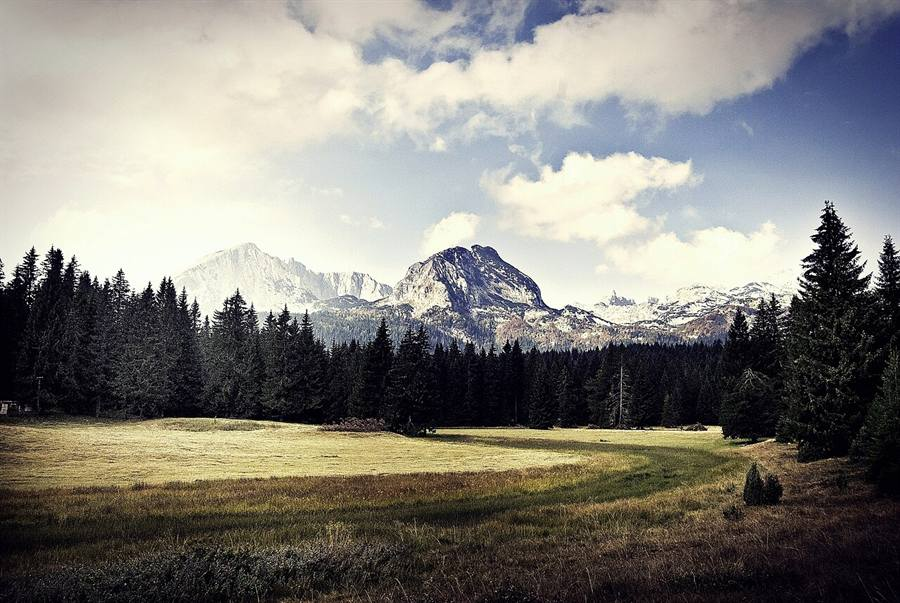

Montenegro Mountains & North 2026: Durmitor, Tara, Lovćen, Ostrog & Skadar Lake
The dramatic counterpoint to the coast. Five national parks, the deepest canyon in Europe, glacial lakes, white cliff monasteries, the old royal capital and the largest lake on the Balkans — all within 1 to 4 hours of Tivat. Going inland once changes the whole trip. This guide covers the routes that fit a day trip, the ones that need an overnight, and how to combine them.

Lovćen & Njegoš Mausoleum
A mountain day with the most theatrical road in Montenegro. The Kotor–Cetinje serpentine has 25 sharp hairpins climbing 900 m above the bay. At the top: Mount Lovćen (1657 m) and the Mausoleum of Njegoš — the warrior-poet bishop Petar II Petrović-Njegoš — accessed by a 461-step tunnel staircase cut into the rock. €5 entry. Built 1971–74 on the site of an earlier chapel. From the viewing platform behind the mausoleum: the whole country at your feet — bay, Skadar Lake, the Adriatic, sometimes Albania on a clear day.
- Routes: The Kotor serpentine is dramatic. The Budva–Cetinje road is smoother — better for nervous drivers.
- Combine with: Njeguši village (pršut and cheese) on the way up. Cetinje on the way down. See the food and wine guide.
- Stops: Restoran Horizont or Nevjesta Jadrana in Njeguši for the bay view and a meat board.
Cetinje — the old royal capital
The historic capital, hidden in a mountain valley at 670 m. Small, cobbled, surprisingly cosmopolitan. At the start of the 20th century it had embassies of every European power. Now it is a slow town of museums, the working Cetinje Monastery (the country's spiritual centre — the relic of John the Baptist's right hand is kept here), royal palaces, and the National Museum of Montenegro.
- King Nikola Museum — the royal palace, €5.
- Biljarda — Njegoš's home, now a museum.
- National Art Gallery — surprisingly strong collection.
- Lunch: Belvedere, or any cafe on the main pedestrian street.
Skadar Lake — the wetland counterpoint
The largest lake on the Balkans, two-thirds in Montenegro, one-third in Albania. A different, softer Montenegro — wetlands, fishing villages, vineyards, hidden monasteries on islands, more than 280 bird species, and water-lily fields blooming in June.
- Virpazar — the main gateway. Boats leave from the old stone bridge constantly in summer. Group tour €15–25/person for 2 hours, private €60–100/boat.
- Rijeka Crnojevića — slower, more atmospheric door. The viewpoint above the famous river bend (Pavlova Strana) is one of the most photographed places in the country.
- Wineries — Crmnica valley around Virpazar. Mašanović (Limljani village), Pajović, Sjekloća. Tastings €15–30/person with food.
- Grand combo — Wine of Montenegro Plantaže Šipčanik + Skadar Lake boat day-tour, €135/person.
Rijeka Crnojevića viewpoint
A river feeds Skadar Lake through a slow, perfect S-bend through the mountains. The viewpoint above it (Pavlova Strana) is the photograph you have seen of Montenegro a hundred times. Below: a tiny village (Rijeka Crnojevića) with one good restaurant on the river (Stari Most), a stone bridge, and very few tourists.
Durmitor National Park & Tara Canyon
The dramatic counterpoint to the coast. UNESCO since 1980. 390 km², 18 glacial lakes, a 1500-m alpine plateau, and the canyon of the river Tara, called the deepest in Europe by the official tourism portal.
Black Lake (Crno Jezero) — what to do in Žabljak
- Drive to Žabljak (3–4 h from Tivat). The mountain gateway town.
- Walk a loop around the Black Lake — 3.6 km, easy, flat, breathtaking.
- Drive to Đurđevića Tara Bridge for the view down into the canyon.
- Optional: zipline across the canyon (€20), or sign up for a half-day rafting trip on the Tara (€50–90).
- Sleep: Cheap mountain rooms €25–50 in Žabljak.
Đurđevića Tara Bridge
A concrete-arch bridge from 1940, 365 m long, 172 m above the canyon. During WWII the engineer who built it was forced to help blow it up to slow the Axis advance — and was executed after, on the bridge itself. Reconstructed in 1946. Today: the viewpoint photograph spot, a small road-stop café, a €20 zipline. The rafting put-in is downstream from here.
Ostrog Monastery
A Serbian Orthodox monastery built directly into the vertical face of a cliff, 900 m above the valley. Two rooms cut into granite in the 17th century by Saint Vasilije of Ostrog. One of the most visited pilgrimage sites in the Balkans — and one of the strangest pieces of architecture you will see anywhere.
- Upper Monastery (Gornji Manastir) — the white-on-cliff icon.
- Lower Monastery (Donji) — reachable by road; a 3 km path or shuttle goes up.
- Entry: free.
- Dress code: shoulders and knees covered. Wraps provided.
- From Tivat: 2 hours via Podgorica.
- Tip: arrive by 9 a.m. to beat the bus tours.
Routes from the coast — at-a-glance
| Route | From Tivat | Best as |
|---|---|---|
| Lovćen + Njeguši + Cetinje | 1 h 15 | One full day |
| Skadar Lake (Virpazar) + winery | 1 h 30 | One full day |
| Rijeka Crnojevića viewpoint | 1 h 30 | Combine with Lovćen / Cetinje |
| Ostrog Monastery | 2 h | Half day from Podgorica side |
| Durmitor + Tara + Black Lake | 3 h 30 | Overnight in Žabljak (recommended) |
| Biogradska Gora | 2 h 30 | Pair with Kolašin overnight |
Frequently asked questions
Is Durmitor National Park worth visiting?
Yes. UNESCO World Heritage Site, 390 km², 18 glacial lakes, the deepest canyon in Europe (Tara). Best for hikers, rafters and travelers who want a strong contrast to the coast.
How do I get to Durmitor from the coast?
From Tivat or Kotor, the drive to Žabljak is 3 to 4 hours via the inland route through Nikšić. Day trips are exhausting; an overnight is far better. Buses run from Podgorica. Rafting tours include round-trip transport.
What is Ostrog Monastery?
A Serbian Orthodox monastery built into a vertical cliff 900 m above the valley. Two rooms cut into granite in the 17th century by Saint Vasilije of Ostrog. One of the most visited pilgrimage sites in the Balkans.
How long is the drive from Kotor to Lovćen?
About 1 to 1.5 hours via the famous 25-bend Kotor–Cetinje serpentine. The Budva–Cetinje road is wider and easier for nervous drivers.
Can you do Skadar Lake as a day trip?
Yes. From Tivat or Kotor, drive 1.5 hours to Virpazar. Boats run constantly in summer (group €15–25 per person, private €60–100 per boat). Pair with a Crmnica winery for the perfect inland day.
Is there snow in the Durmitor mountains in summer?
Patches in shaded high ridges can persist into early July in cold years, but mostly the mountain plateau is clear from late May to October. The Black Lake itself is at 1416 m — never frozen in summer.
How cold is the north compared to the coast?
Coast: 28–33°C in June–July. Žabljak: 14–22°C daytime, 5–10°C nights. Bring a fleece even in midsummer.